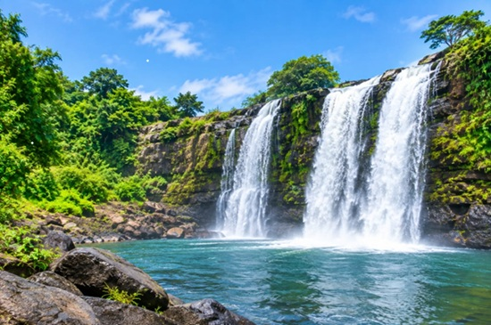

Adie G. Ushie
About Me
My name is Adie G. Ushie. I am a student learning web development and programming. I enjoy learning new technology and developing skills that can help me build useful websites and applications.
Nigeria

Nigeria is a country in West Africa known for its diverse cultures, languages, natural resources, and beautiful landscapes. Its many communities contribute to a rich cultural heritage.